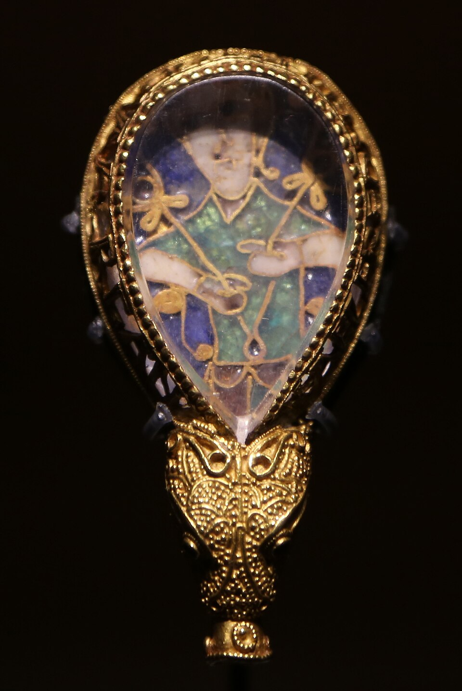
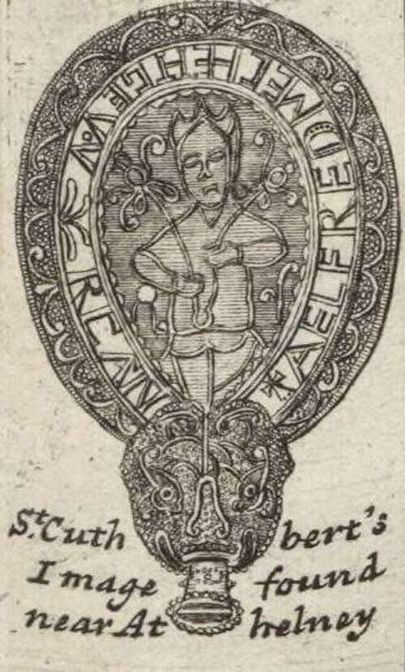
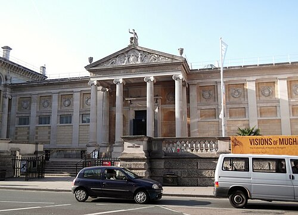
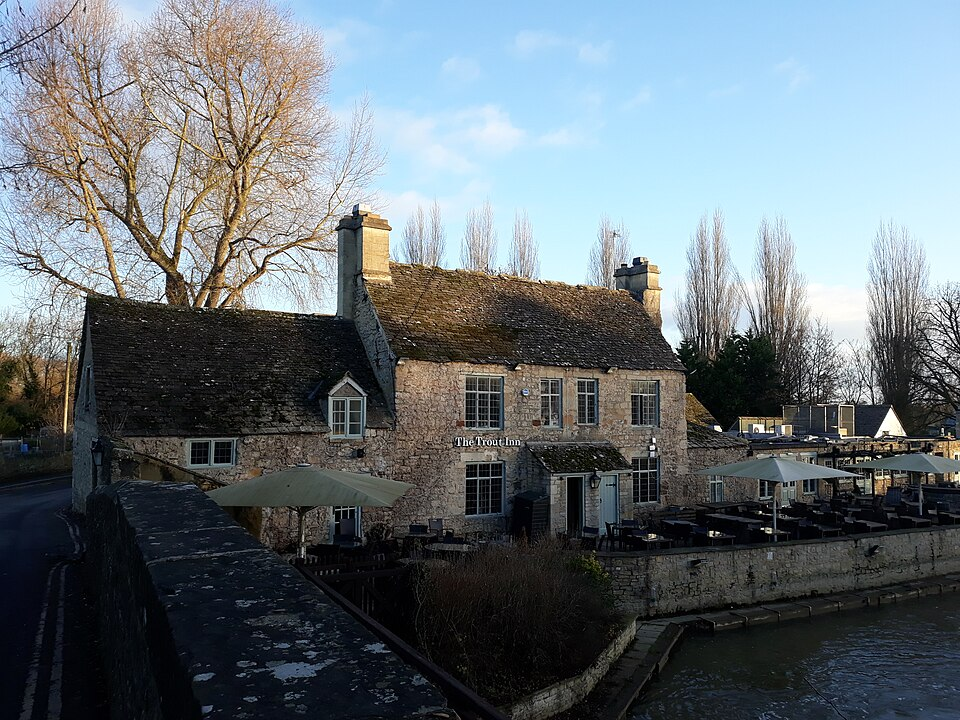
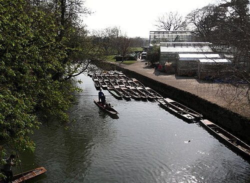

Роман · 1991
Драгоценность
The Jewel That Was Ours — девятый роман об инспекторе Морсе. Русское название рабочее.
- Первое издание
- Macmillan, Лондон, 11 июля 1991; в США — Crown, март 1992
- Время действия
- ноябрь 1990 года; Морсу 55 лет
- Расследуют
- главный инспектор Морс и сержант Льюис
- Место
- отель «Рэндольф» и музей Эшмола в Оксфорде; Стратфорд, Бат, Лондон, Нью-Йорк
- Экранизация
- серия «Язычок из Вулверкота» (The Wolvercote Tongue), 25 декабря 1987 — вышла раньше романа; режиссёр Аластер Рид, сценарий Джулиана Митчелла
Единственный роман после фильма
Это особая книга цикла. Сначала Декстер придумал сюжет для рождественской серии «Инспектора Морса» 1987 года, а через четыре года написал по нему роман с теми же героями. Только эта книга о Морсе появилась после своей экранизации, и развязка у неё другая. Критики приняли роман прохладно; Kirkus Reviews назвал его слабее восьми предыдущих, а рецензент Entertainment Weekly, наоборот, решил, что книга лучше фильма: больше поворотов и меньше карикатурных американцев.
Завязка
В Оксфорд приезжает американская туристическая группа «Исторические города Англии»: туристам от шестидесяти пяти до семидесяти пяти. Лора Стрэттон везёт с собой «Язычок из Вулверкота» — золотую пряжку с рубинами, которую по завещанию первого мужа должна передать музею Эшмола. Через сорок пять минут после приезда её находят мёртвой в номере «Рэндольфа»; патологоанатом Макс говорит о сердечном приступе. Сумочка с «язычком» пропала. Потом исчезает хранитель Эшмола доктор Теодор Кемп, который писал о сокровище книгу; его голое тело с проломленной головой находят в реке Черуэлл.
Развязка — открыть, если роман прочитан
Двумя годами раньше Кемп устроил аварию: его беременная жена Марион потеряла ребёнка и осталась прикована к инвалидному креслу, а водитель другой машины, двадцатидевятилетняя Филиппа, погибла. Кемп отделался лишением прав на три года. Филиппа была единственной дочерью туристов Джанет Роско и Фила Олдрича; Джанет смертельно больна раком, и они поехали в тур, чтобы отомстить.
Стрэттоны были почти разорены и рассчитывали на страховку за «язычок». В автобусе Джанет и Фил подслушали их и заключили сделку: Стрэттоны крадут сокровище, а Эдди помогает убить Кемпа. Фил встретил Кемпа на вокзале и отвёз к нему домой; кто ударил его тростью Марион, трое так и не сказали. Кемп упал, разбил голову о камин и истёк кровью. Эдди, бывший владелец похоронного бюро, раздел тело и бросил в реку. Эдди арестовывают в Нью-Йорке, руководитель тура Ашенден признаётся во всём в письме Морсу. Марион Кемп кончает с собой в Лондоне.
Люди
| Имя | Кто это |
|---|---|
| Лора и Эдди Стрэттоны | Американцы из группы; Эдди когда-то держал похоронное бюро. |
| Джанет Роско и Фил Олдрич | Супруги из группы, больше сорока лет в браке; Фил плохо слышит. |
| Говард и Ширли Браун | Друзья Стрэттонов; Говард встречает женщину из своего военного прошлого. |
| Джон Ашенден | Руководитель тура. |
| Шейла Уильямс | Организатор от университета, бывшая любовница Кемпа. |
| Доктор Теодор Кемп | Хранитель музея Эшмола, известный ловелас. |
| Марион Кемп | Его жена, после аварии в инвалидном кресле. |
| Седрик и Люси Даунс | Знаток английской архитектуры со слуховым аппаратом и его жена. |
| Макс, Стрейндж, сержант Диксон | Постоянные лица цикла. |
Альфредова драгоценность
«Язычок из Вулверкота» выдуман, но у него есть настоящий прообраз — Альфредова драгоценность в музее Эшмола. Это золотая оправа с перегородчатой эмалью под горным хрусталём, найденная в 1693 году в Сомерсете. По краю идёт староанглийская надпись: «Альфред велел меня сделать». Скорее всего, это навершие указки для чтения, какие король Альфред Великий рассылал по епархиям вместе с переводом «Пастырского попечения». В музее она с 1718 года.



.jpg){kind=link}
Места
| Место | Что там происходит | |
|---|---|---|
| Отель «Рэндольф» | есть | Здесь живут туристы и умирает Лора. Бар отеля теперь называется «Морс». |
| Музей Эшмола | есть | Напротив отеля; сюда предназначался «язычок». |
| Река Черуэлл | есть | Здесь находят Кемпа. |
| Вулверкот | есть | Деревня у самого Оксфорда, давшая имя вымышленной пряжке. |
| Паб «Форель» | есть | Старый паб у Годстоуского моста; в сериале снят трижды. |






Реалии
- Музей Эшмола
- Старейший публичный музей Британии, открыт в 1683 году. Античность, археология, живопись — и Альфредова драгоценность.
- Туры по историческим городам
- Классический маршрут американских пенсионеров: Оксфорд, Стратфорд-на-Эйвоне, Бат, Лондон. По нему и движется группа.
- Плоскодонка (punt)
- Лодка, которую толкают шестом. На Черуэлле летом ими забита вся река.
Книга и сериал
«Язычок из Вулверкота» вышел 25 декабря 1987 года как рождественская серия. В ролях: Джон Тоу, Кевин Уотли, Саймон Кэллоу (Теодор Кемп), Кеннет Крэнем (Седрик Даунс), Роберта Тейлор (Шейла Уильямс), Роберт Арден и Кристин Норден (Эдди и Лора Пойндекстер).
- Стрэттоны в сериале зовутся Пойндекстерами.
- В баре «Рэндольфа» примерно на 32-й минуте видны Декстер и сценарист Джулиан Митчелл. Снимали также в Эшмоле, в пабе «Форель» и на Годстоуском мосту, в Нью-колледже и на железнодорожном музее в Дидкоте.
- Музыка: «Текут мои слёзы» Джона Дауленда на банкете, «Троянцы» Берлиоза в машине Морса и старая песня «Love's Old Sweet Song» у отельного пианиста.
- По комментариям поклонников, в сериале Кемпа случайно убивает Седрик Даунс, а потом и свою жену Люси.